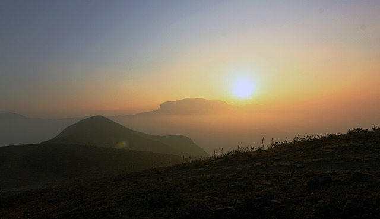

Mountains
Last Updated: April 27, 2022
Everybody wants to reach the peak, but there is no growth on the top of a mountain. It is in the valley that we slog through the lush grass and rich soil, learning and becoming what enables us to summit life’s next peak. That's why mountains are always my favorite destinations.
A mountain is an elevated portion of the Earth's crust, generally with steep sides that show significant exposed bedrock. A mountain differs from a plateau in having a limited summit area, and is larger than a hill, typically rising at least 300 metres (1000 feet) above the surrounding land. A few mountains are isolated summits, but most occur in mountain ranges
Mountains are formed through tectonic forces, erosion, or volcanism,[1] which act on time scales of up to tens of millions of years.[2] Once mountain building ceases, mountains are slowly leveled through the action of weathering, through slumping and other forms of mass wasting, as well as through erosion by rivers and glaciers.[3] High elevations on mountains produce colder climates than at sea level at similar latitude. These colder climates strongly affect the ecosystems of mountains: different elevations have different plants and animals. Because of the less hospitable terrain and climate, mountains tend to be used less for agriculture and more for resource extraction, such as mining and logging, along with recreation, such as mountain climbing and skiing.